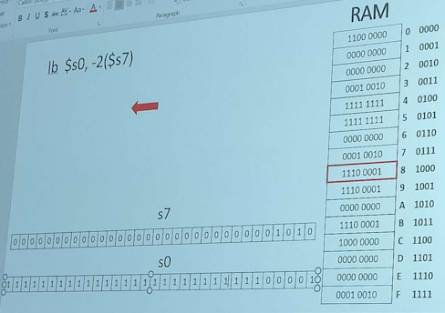

MIPS assembly continued
Memory
Arrays:
- An array of e.g. integers are all stored next to each other in a contiguous block of memory.
- If you know where the array starts and what the data size is, you can get all items
- For example, if the first element is at address 100, the next element is at address 104 (because an integer has a size of 4 bytes)
Example 1: Array of objects
// in memory, this will look the same
// as an array of length 2
class C {
int num1;
int num2;
} o1;
// so this will be like an array
// of length 6
objs[3];
In this class we don't require thinking about struct alignment on exams or homeworks.
Class methods:
- If a method is defined in a class, it is not stored in the object location
- Instead, it is stored with the rest of program code
Unsigned notation
In unsigned notation, we write 12 base 10 as 0000 1100 in binary.
In unsigned notation, we pad numbers with zeros regardless of sign.
However, in signed (2's complement) notation we pad negative numbers with ones.
2's complement will appear on the exam.
lbu and lhu instructions
lbu stands for "Load Byte Unsigned"
- Treat byte as unsigned int, so pad with zeros, regardless of whether leading bit in data read from RAM is a zero or a one
Similarly, lhu stands for "load half-word unsigned", and behaves similarly except it reads 2 bytes instead of one.
There is no "lwu" instruction:
- There is no need to pad the left side of the register with anything for a word because it is 4 bytes and fills up the entire register.
- Meaning is preserved regardless.

We do not need unsigned "store" instructions:
- There is nothing to extend to preserve the meaning of the number signs
- RAM is byte-by-byte, so when storing meaning is always preserved -
sbonly affects one byte, not a 4-byte area likelbdoes, so no need to pad
Common exam question - "give -65 in 16-bit 2's complement notation"
Since -1 is 1111 1111 1111 1111 in 2's complement notation, we just need to subtract 64 from this to get the desired result. 64 is 1111 1111 1011 1111 (note that we start counting from the right side at
2's complement is basically just taking all the numbers up to the maximum number given by the range (all 1's) and then slicing off the top half and calling them negative numbers. The top half is sliced off and placed in front of the range starting at 0, so all 1's corresponds to -1. In order to write -x, we just need to find what the binary version of +x is and then subtract that from the maximum integer (all 1's) but then add 1 back, because all 1's represents -1.
(Note that negative numbers necessarily cannot be expressed in unsigned notation.)
Endianness - in what order bytes are loaded into the register
Two approaches - "big-endian" and "little-endian"
Sy we have the following in RAM, where B1..B4 represent bytes 1 through 4:
contents|address -|- B1|8 B2|9 B3|A B4|B
And we have the following instruction in MIPS:
lw $s0, -2($s7)
Assume s7 holds 10 (A in hex), so -2($s7) means 8
Here is what is in s0:
- Big-endian: [ B1 B2 B3 B4 ]
- Little endian: [ B4 B3 B2 B1 ]
By default our class uses the big-endian approach.
Regardless of endianness, we still start filling the register from the right side:
- If we did
lh $s0, -2($s7)instead:- Big-endian: [ 0 0 B1 B2 ]
- Little-endian: [ 0 0 B2 B1 ]